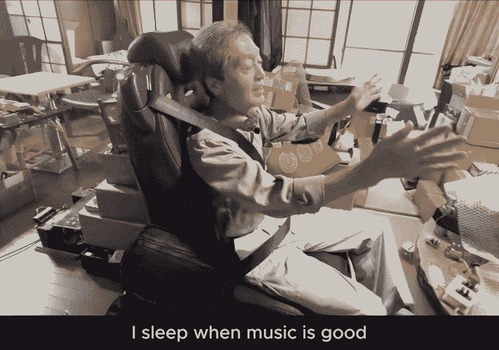

Greetings traveler.
This is the in-depth wiki for femishonuga.com. navigate by clicking the tabs above ⬆ . This site is mainly meant to be viewed on desktop.
see the sitemap for a full list of the pages on this wiki
Femi is a Providence bases architect and sound artist from new York who works with synthesizers, handmade electronics and node based programming languages to discuss the organics of experimental sound and Spatial Audio through site specific ritual performances. His work explores the intersections of acousmatics and cultural anthology through architectural design as a radical and experimental practice. He’s most interested in generative systems, sonic acts as rituals, and the poetics of sound technology. Femi’s architectural practice explores themes of afrosurrealism and soundsystem culture as a lens for conversations between sound, space and interactions with the body. Femi has been performing solo and with collaborators as an experimental electronics musician under the moniker "sadnoise" since 2019. Most notable shows include Ende Tymes (2022, New York), Waterworks Festival (2024), Sonic Acts Biennial (2026), amongst others.

